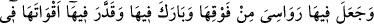
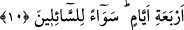

İmam Ebu’l-Leys der ki: Pazar günü yaratmış, Pazartesi günü ise yayıp döşemiştir.
Bunun tahkik ve değerlendirmesi birazdan yapılacaktır. Yerin iki günde yani iki nöbette
yaratılmasında şu da kasdedilmiş olabilir: Her bir nöbette vücûda gelen, olabilecek en
hızlı şekilde mevcûd olmuş olur; dolayısıyla “iki gün” ifâdesi, melzûmu zikredip
lâzımını kasdetme kabilinden ‘iki defa’dan mecâz olmuş olur.
Müftî Sa’dî der ki: Bu tefsirden ilk anda anlaşılan odur ki âyetteki “gün” mutlak
mânâda vakit demektir.
“İki gün”ün sözü edilen iki mânâya hamledilmesi şöyle açıklanabilir: Gerçek (bir)
gün, ancak yerin varlık sahnesine çıkmasından ve göklerin tam olarak meydana gelip
parlak gök cisimlerinin eşsiz bir şekilde yaratılarak hareketlerinin düzenlenmesinden
sonra gerçekleşebilir. Yani gün denilen şey, Güneş’in yerin üzerinde bulunduğu
zamandan ibaret olup yer, gök ve yıldızlar henüz yaratılmamışken böyle bir şey
düşünülemez; bu tasavvur edilemeyeceğine göre, yerin bu mânâda “iki gün”de
yaratılmış olması nasıl düşünülebilir?
“O’na birtakım ortaklar mı koşuyorsunuz?” ifâdesi, “inkâr edip” cümlesine mâtûf
olması hasebiyle bu da kınanıp yadırganmaktadır. “Ortaklar” diye çoğul getirilmesi
vâkıada böyle olduğu içindir; yoksa “Allah’a denk tutulan”ın çok sayıda olması
yadırganıyor değildir. Yâni “O’na birtakım ortaklar mı koşuyorsunuz?” demek,
“O’nun için, bırakın ‘birtakım ortaklar’ı, tek bir denk ve benzer bile söz konusu
olmamasına rağmen, siz kalkıp birtakım ortaklar, benzerler ve denkler; yani ilâhlar
yakıştırıyorsunuz!” demektir. Yüce Allah burada Rasûlullah’a (s.a.) müşriklerin iki
tutumunu yadırgayıp tenkid etmesini emrediyor: Biri: Müşriklerin, Allah’ın zâtında ve
sıfatlarında O’nu cisimleştirme, O’nun için hanım ve çocuk edinmeyi normal görme,
O’nun ölüleri diriltmeye kâdir olmadığına ve bir insanı peygamber olarak
göndermeyeceğine hükmetme gibi birtakım yanlış inançlara saparak gerçekleştirdikleri
inkârdır. İkincisi ise, O yüce varlık için bir takım denk ve ortak varlıklar kabul ederek
gerçekleştirdikleri inkârdır ki –birinin diğerine atfedilmesinin zarûrî olarak ortaya
koyduğu gibi- ilkin sözü edilen inkârla, O’nun için denk varlıklar düşünmek farklı farklı
şeylerdir.
“O”; yeri iki günde yaratma gibi işleri gerçekleştiren şânı yüce zât, “âlemlerin
Rabbidir.” Yani, sadece yeri değil, bütün varlıkları yaratan ve onları büyütüp
yetiştirendir. Öyle ise, yarattığı en basit ve değersiz şeylerin (putların), O’na denk
olduğu nasıl düşünülebilir!?